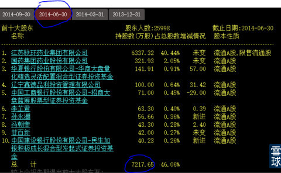
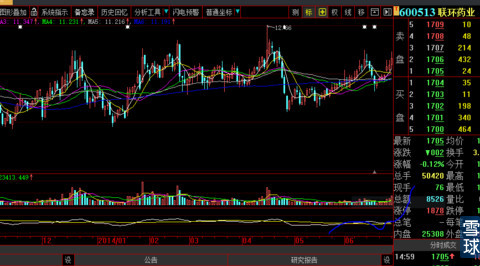
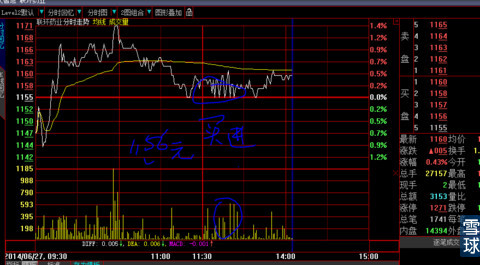
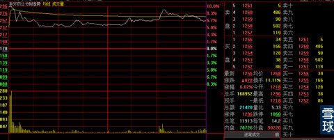
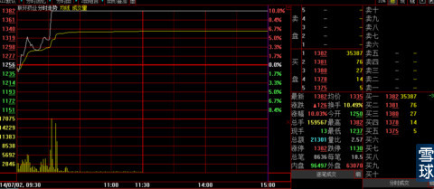
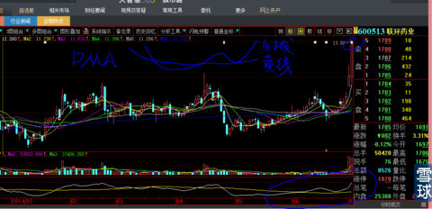
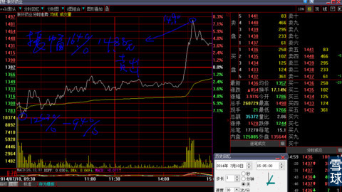
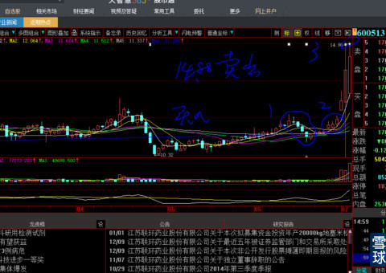
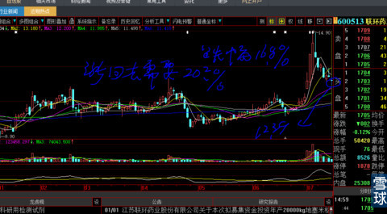
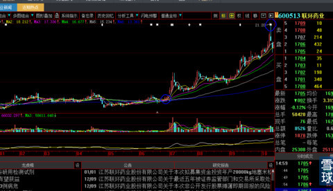

完美的脸@炒的是心:心大，推荐支票$联环药业(SH600513)$ ，短期牛股的第二波、资金已经进来了，题材是禽流感、抗病毒类药物，供观察
炒的是心@完美的脸: 哈哈哈，你让我想起我在2014年7月11日这个股票里的传奇故事，这个是我去年最有故事的好玩战例。我先把交易单查出来，如果因为时间过长证券公司查不出来交易单就算了，因为我喜欢真实不喜欢编故事。这个战例绝对经典，把短线技术发挥到极致。
因为上述的对话，激起的写这个帖子，最终证券交易软件不能再查阅太长时间交易单，但是我还是写出来，就凭粉丝一提问我就想起来，真实性不需要再质疑了吧？我相信对你们有好处，特别对老粉手里现持股票有好处，心照不宣你看完最后一张图就懂我的意思啦。
600513联环药业2014年6月前十股东结构图如下图：
总股本15670万股，前十大股东7217万股，真实流通盘8453万股。在医药板块比价效应看属于低价小盘股。

2014年6月27日，看到下图，我哪里还等的急？见下图
技术要领：第一、连续4根阴线，做盘的痕迹简直是昭告天下；第二、再之前有连续大阴线杀跌4天，又用1个多月时间向上吃筹码，这是典型的“庄股”建完底仓后最后洗盘特征；第三、但是从连续成交量以及吃筹的小心翼翼来看，庄家实力一般：1、专拣没有人注意的低价小盘股；2、吃筹动作小心翼翼，宁愿花时间也不愿意拔高建仓可以看出很在乎建仓成本。你如果看不懂庄股特征不要紧，顶着它看5天你就开天眼了。

第四、6月26日股价以小跳空方式站上10日均线，第二天照惯例平开低走再高走，强势吃进小尖顶解套筹码，我就是这天11.56跟庄建仓。见下图

买进第三天，股价再跳空高开，然后用“红旗飘飘”方式（见鲁正轩1999年版《看盘高手》有解释）放任市场成交一天。见下图

再一天，半小时封涨停板。见下图。

下图就是2014年7月2日“联环药业”涨停板收盘那天的收盘K线图，多么漂亮，它让我充满了幻想，几乎都忘记做它的庄家是一个斤斤计较的家伙，这是后话。
大家看看下图，明白DMA的精要了吗？这就是我设计傻瓜型DMA的秘密所在：测试庄家洗盘的底线“不见鬼子不挂弦”。你们看，5、10日均线线全部向下拐头，按照你们学习的书本知识，就是要止损退出，但是我的DMA白线大角度上穿黄线后再短期快速回落到黄线附近，不会下穿黄线再向上稍微有拐头迹象就进场，就是庄股主升浪开始的”最后倒计时刻“。
这是我的东西，不是所有公众股民都看得到的MACD、KDJ等摆动指标，庄家做骗线，只能在软件公司的这些普通摆动指标里玩花招，专骗半吊子还振振有词的技术派，在我的技术这里全部现出原形。你可能说，现在我的技术公开了会失效！你就放100个心吧，这个我已经在《进出场最高原则：前辈满满的爱》帖子里面解释过了。
第二天公告停牌。

等到7月10日复牌，开盘就向下-6.9%的12.86元开盘，我一下子就惊醒了，但是“伟哥”商标概念已经集中到它身上，这样的结果一下子把我对庄家斤斤计较的本性想起来了。股价迅速被打低到12.63元，跌幅9.4%，差一点跌停板，我脑子很清醒，股价总体涨幅不大，几乎把上一个涨停板全部抹平，必有快速反弹。
这时候，公司来了一位市长需要陪同，我经过详细计算：股价有可能冲击15元，只有这样分时图上的上下幅度就“比较对称”（这个概念你们是在任何书上都看不到的），既然上午最低跌幅9.4%，下午就有可能冲击14.98元（15元是整数，市场心理压力大），我的持股数量比较大，就折扣0.1元上午就填好卖单14.88元走人公干去了（这就是我说的传奇的地方）。等我晚上回家看盘，我的个天啊，正好把我14.88元全部打掉，当天上下振幅高达16.4%，从底部12.63元算起，涨幅达到17.9%。哈哈，这也是我写《人是需要一些运气的》帖子的原因之一，过往的经历中，这样类似的多次经历证明，我的运气实在是比别人好一些。

下图就是7月10日日线收盘图

下图是一周后的情形，股价下跌16.8%，从这个位置涨回去需要20.2%，对于1000万的资金来说就是202万元，可以买2量大奔。你说心疼不心疼？

在后来整整3个月后，股价走到21.2元。

呵呵，今天一个粉丝小朋友的小提问，勾起我这个帖子，你们应该感谢这位小朋友。
重要的是给你们解密了一个DMA精要用法之一：就凭这一个小技法，你们中的聪明人就可以专门用这一把刀，狙击个股、横行江湖，招式不在多，在于精、在于专。十八般武艺、什么拳法都会，等于没有武艺。
我的话和用心你仔细揣摩是什么含义（专找这样技术形态的股票玩啊笨蛋）。
不懂DMA的新人如果发问，你们中的师兄师姐不要告诉他：他连起码的读贴、用功都不肯，你告诉他有何用？
 |
对称性传奇：2014年7月11日600513联环药业短线经典实战例炒的是心 2015-01-27 00:13:43 |
Copyright © 1996-2014 SINA Corporation All Rights Reserved.